课程封面：站在3800之上
本次分享主题：上证指数站上3800点之后，市场怎么看？牛市到了什么阶段？短期是否需要调整？结构上应该配什么？
今年主要是小盘+成长风格跑的好
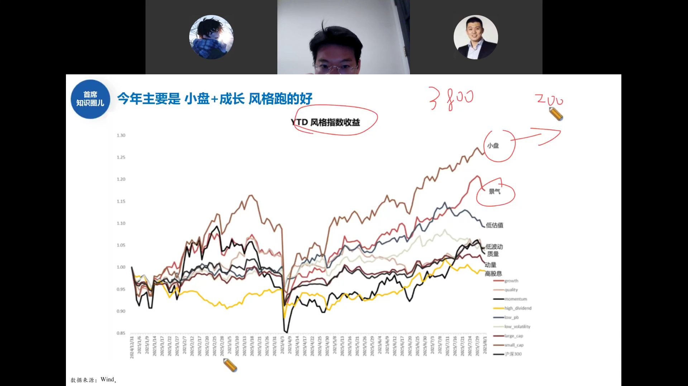
从YTD风格指数收益曲线看，今年表现最强的两个风格：
- 小盘（small_cap）：棕色曲线，涨幅最大，YTD收益约25%+
- 景气（growth）：红色曲线，紧随其后
- 高股息、低波动、动量等防御风格表现落后，黄色和黑色曲线在下方
今年炒的就是偏成长的东西。近期风格偏成长，小盘+景气两条线最强。
风格背后的宏观规律：市场在定价"复苏"
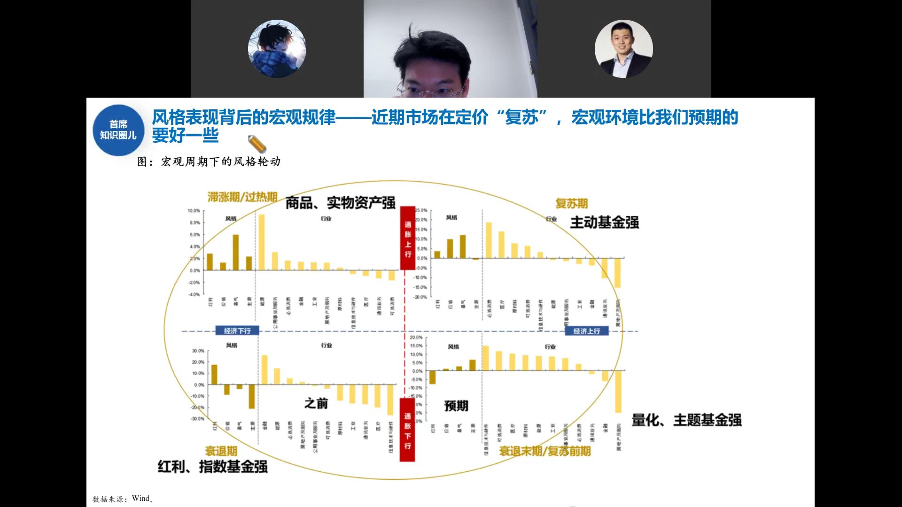
这张经典的宏观周期风格轮动四象限图解释了为什么今年小盘+成长跑赢：
- 衰退期（经济下行+通胀下行）：红利、指数基金强
- 衰退末期/复苏前期（经济转向+通胀低位）：量化、主题基金强
- 复苏期（经济上行+通胀温和）：主动基金强
- 滞涨期/过热期（经济高位+通胀上行）：商品、实物资产强
邓老师标注：7月18日时市场还在"衰退末期/复苏前期"位置（量化、主题强），但9月初已经在向"复苏期"移动——近期市场在定价"复苏"，宏观环境比预期要好一些。
近期风格从红利/低估值切向景气/成长，本质是市场在定价经济复苏预期。
宏观大势三因素：货币、经济、剩余流动性
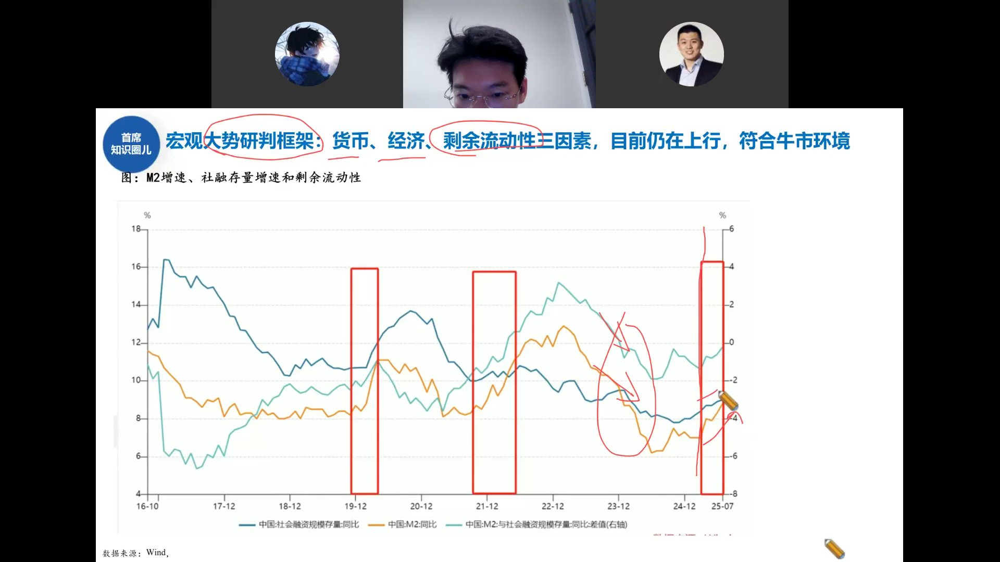
邓老师的宏观大势研判框架看三个因素：
- 货币：M2同比增速——目前在往上走
- 经济：社融存量增速——目前也在往上走
- 剩余流动性：M2与社融存量增速之差（右轴）——当前大幅回升至正值区间
历史上红色方框标出的几次三因素共振上行时点（2019年初、2021年初、2024年底），都对应着大级别行情启动。当前三因素仍在上行，符合牛市环境。
判断牛市能不能持续，就看这三个指标：货币松不松、经济好不好、钱剩多不多。目前三个都在往上。
A股简明流程攻略：牛市中段，尚未疯狂
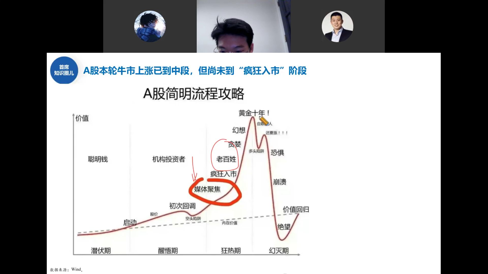
经典的A股牛市周期图，邓老师标注当前位置：
- 潜伏期：聪明钱买入，无人问津——已过
- 醒悟期：机构投资者进场，初次回调、空头陷阱——已过
- 狂热期：媒体聚焦→老百姓疯狂入市→贪婪→黄金十年幻想——当前位置
- 幻灭期：恐惧、崩溃、绝望——尚未到来
牛市肯定没结束。现在是牛市的中段，媒体已经开始聚焦，但远没有到老百姓疯狂入市的阶段。杠杆、公募、外资这些增量资金主力还没大规模进场。
融资买入额：短期情绪过于亢奋
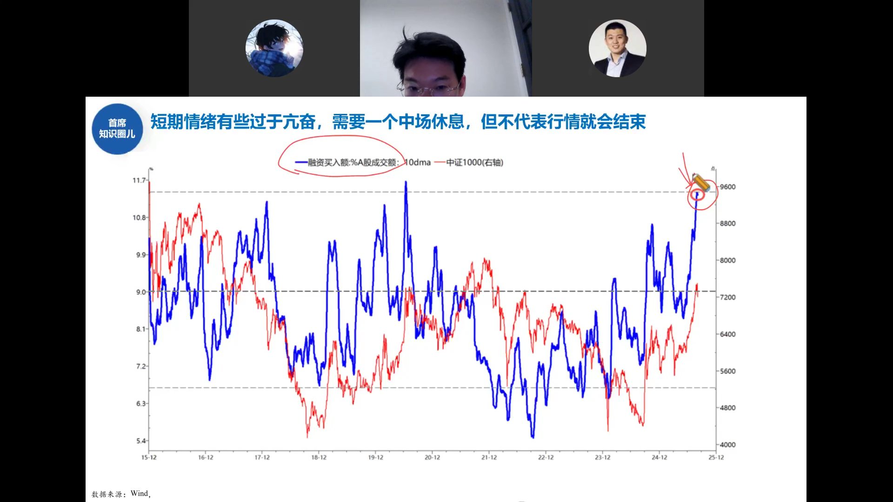
融资买入额占A股成交额的10日均线（蓝线）已经冲到历史高位区域：
- 蓝线当前突破11%，达到2015年以来的极值区间
- 红线（中证1000右轴）同步飙升
- 历史上融资买入占比冲到这种位置后，短期往往需要震荡消化
短期情绪有些过于亢奋，需要一个中场休息——但这不代表行情结束，只是涨太快需要歇歇脚。
大盘小盘分化过大：需要中场休息
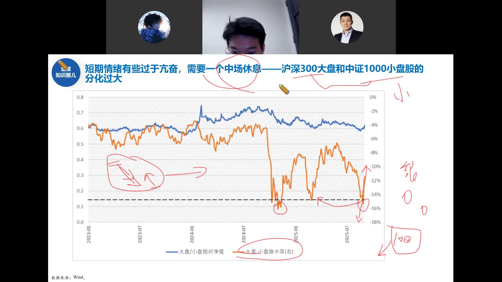
沪深300大盘和中证1000小盘股的分化过大：
- 蓝线（大盘/小盘相对净值）持续下行，说明小盘持续跑赢大盘
- 橙线（大盘-小盘换手率右轴）已经打到-16%以下的极端位置
- 历史上这种极端分化后，往往出现大小盘风格再平衡
小盘涨太多了，短期需要中场休息。但这不是行情结束信号，而是涨太快后的正常消化。
估值表：多数不便宜但不算夸张
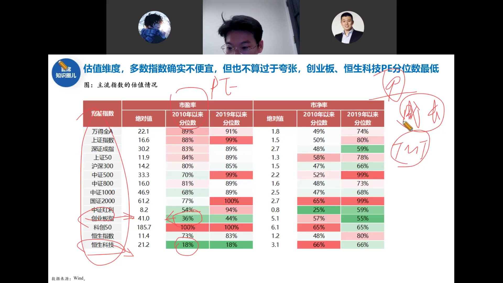
主流指数PE/PB估值分位数一览：
- 偏贵的：上证指数PE分位88%（2019年以来99%）、中证500（99%）、国证2000（100%）、科创50（100%）
- 相对便宜的：创业板指PE分位仅36%（2019年以来44%）、恒生科技PE分位仅18%、中证红利PB分位25%
- 万得全A PE分位89%，确实不便宜
多数指数确实不便宜，但也不算过于夸张。创业板、恒生科技PE分位数最低——成长和港股还有估值空间。
GLMSDI：医药生物 Price-Volume分位
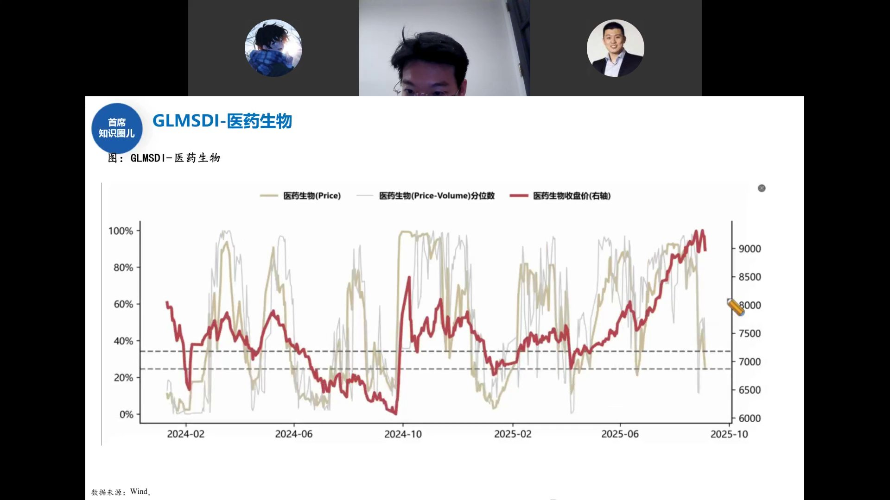
邓老师团队自建的GLMSDI指标跟踪医药生物板块：
- 黄线（Price分位数）和灰线（Price-Volume分位数）在30%以下时是较好的买入区间
- 红线（医药生物收盘价右轴）持续上行，从2025年初的6500点涨到9000点以上
- 当前Price-Volume分位在60%-80%之间波动，不算极端高位
关税大战撕掉遮羞布：美元体系撑不住了
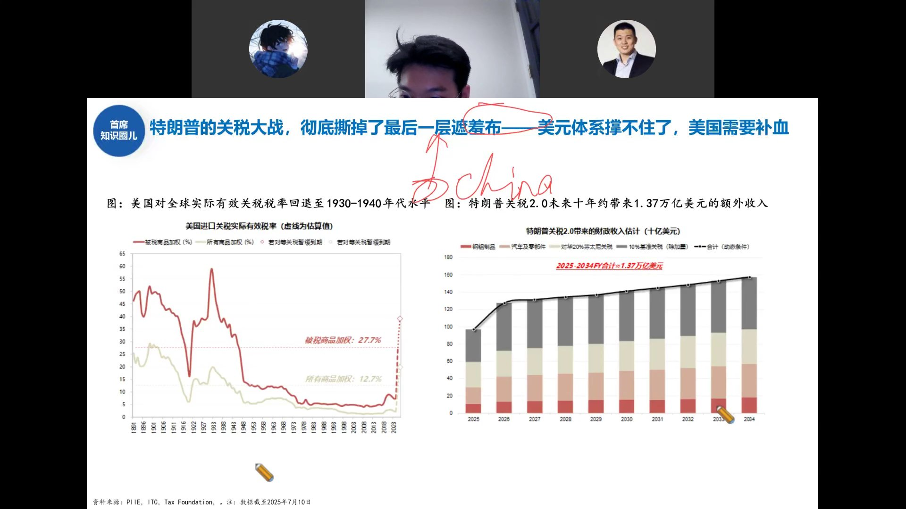
两张图揭示一个大逻辑：
左图：美国实际有效关税税率回退至1930-1940年代水平
- 被税商品加权税率27.7%，所有商品加权12.7%
- 这是大萧条时期斯姆特-霍利关税法以来的最高水平
右图：特朗普关税2.0未来十年约1.37万亿美元额外收入
- 关税本质是美国财政缺钱了，需要通过关税"补血"
- 2025-2034财年合计约1.37万亿美元
特朗普的关税大战彻底撕掉了最后一层遮羞布——美元体系撑不住了，美国需要从全球抽血。这本质上体现美元霸权的衰落。
本轮贸易战拿"小弟"开刀：美元霸权衰落
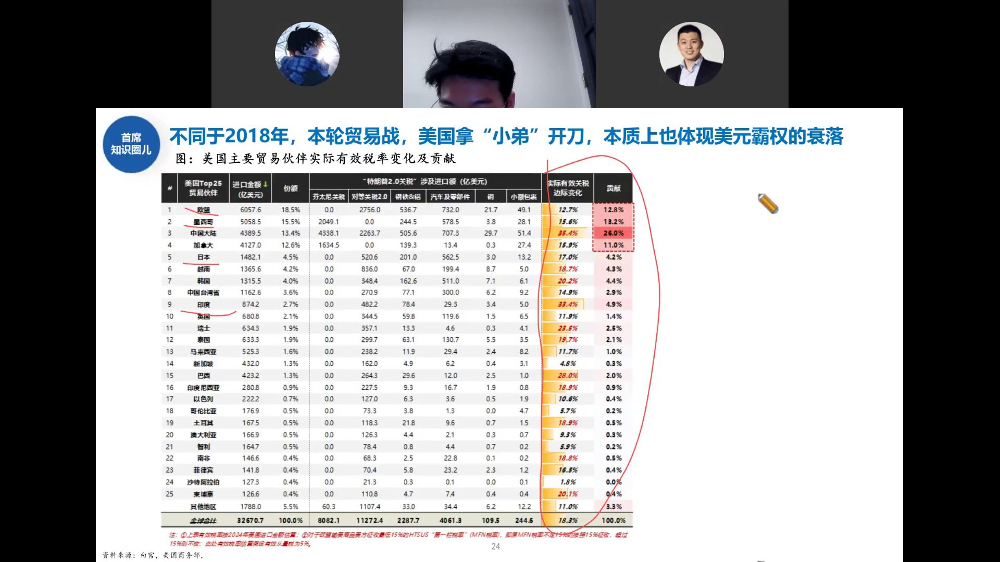
不同于2018年直接针对中国，本轮贸易战的征税对象分布很有意思：
- 中国大陆实际有效税率35.4%，贡献26.0%的关税收入
- 欧盟12.7%（贡献12.8%）、墨西哥15.6%（贡献13.2%）、越南18.7%、印度33.4%
- 美国对全球加税，拿"小弟"开刀——本质上是美元霸权衰落，需要从全世界抽血
对中国加税已经加不动了（本来就很高），现在对欧盟、墨西哥、越南、印度加税——这就是美国在全球范围内"补血"。
全球资金追安全：港股持仓占比回升
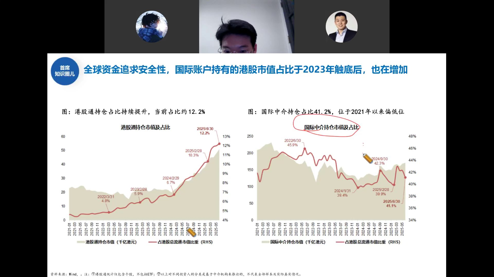
两个指标显示全球资金在增配港股：
左图：港股通持仓市值及占比
- 南向资金持仓占港股总流通市值比重从2022年的4.8%升至2025年6月的12.2%
- 2025年2月28日为10.3%，持续上升
右图：国际中介持仓市值及占比
- 国际中介持仓占比41.1%，位于2021年以来偏低位置
- 2022年6月高点45.9%，当前41.1%——仍有回升空间
全球资金追求安全性，国际账户持有的港股市值占比于2023年触底后持续增加。美元霸权衰落+降息周期，资金从美元资产流出，港股是重要目的地。
降息周期下：非美权益+黄金组合
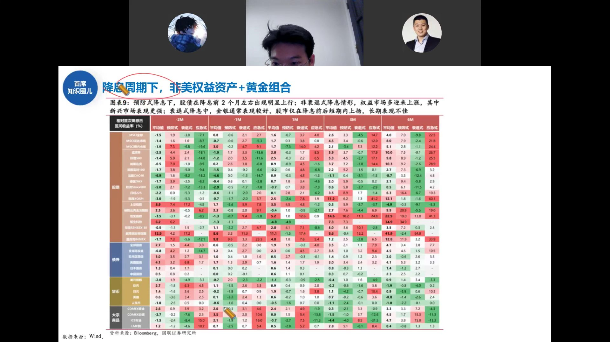
这张庞大的矩阵统计了历史上不同降息类型下各大类资产的表现：
- 预防性降息：股债在降息前2个月左右出现明显上行
- 非衰退式降息：权益市场多迎来上涨，新兴市场表现更强
- 衰退式降息：金银通常表现较好，股市仅在降息前后短期上扬
- 韩国KOSPI、恒生科技、印度SENSEX等新兴市场在降息后6个月收益显著
降息周期下，非美权益资产+黄金是最优组合。港股、新兴市场在降息后6-12个月表现最好。
居民存款搬家：储蓄流向风险资产
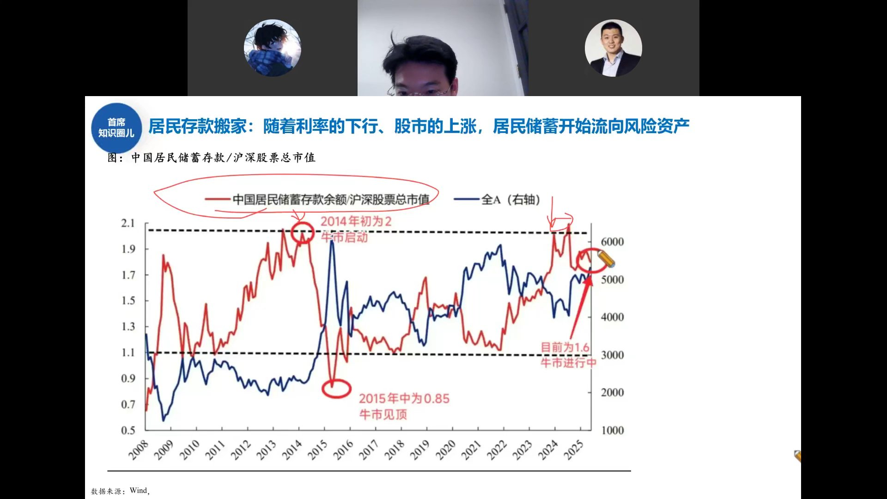
这是判断牛市到了什么阶段的核心指标：
- 红线（居民储蓄存款余额/沪深股票总市值）：2014年初约2.0——牛市启动；2015年中约0.85——牛市见顶
- 当前约1.6——牛市进行中，但远未到2015年0.85的疯狂水平
- 蓝线（全A指数右轴）与红线呈反向关系
随着利率下行、股市上涨，居民储蓄开始流向风险资产（存款搬家）。但目前1.6的比值说明搬家才刚开始，远未到2015年那种全民炒股的程度。
盈利基本面：科技+制造业是主线
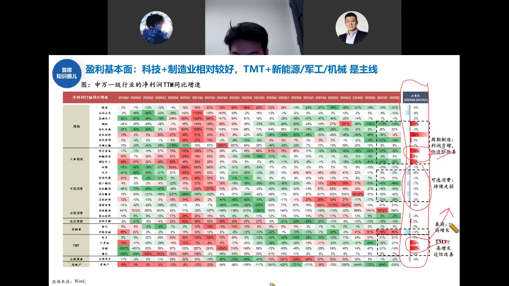
申万一级行业净利润TTM同比增速热力图，邓老师标注了四个方向：
- 周期制造：利润负增，但边际改善（电力设备、机械、军工）
- 可选消费：持续走弱（纺服、商贸、社会服务）
- 券商：高增长（非银金融2025Q2利润同比+79%）
- TMT：高增长，边际改善（电子、计算机、传媒、通信）
盈利基本面上，科技+制造业相对较好，TMT+新能源/军工/机械是主线。这与估值表中创业板、恒生科技PE分位最低相互印证——成长方向既有盈利支撑，估值也不贵。
波动率敏感性：低波动=高收益
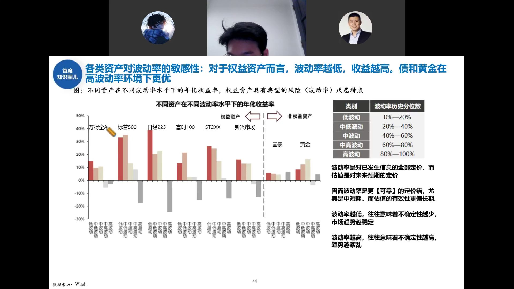
这张图展示了一个重要规律：
- 对于权益资产（万得全A、标普500、日经225等），波动率越低，年化收益率越高
- 高波动率环境下，权益资产收益大幅下降甚至为负
- 国债和黄金在高波动率环境下反而表现更好——避险属性
波动率是对已发生信息的全部定价，估值是对未来预期的定价。波动率越低，不确定性越少，市场趋势越稳定——权益收益越好。
当开始暴涨的时候，反而需要当心
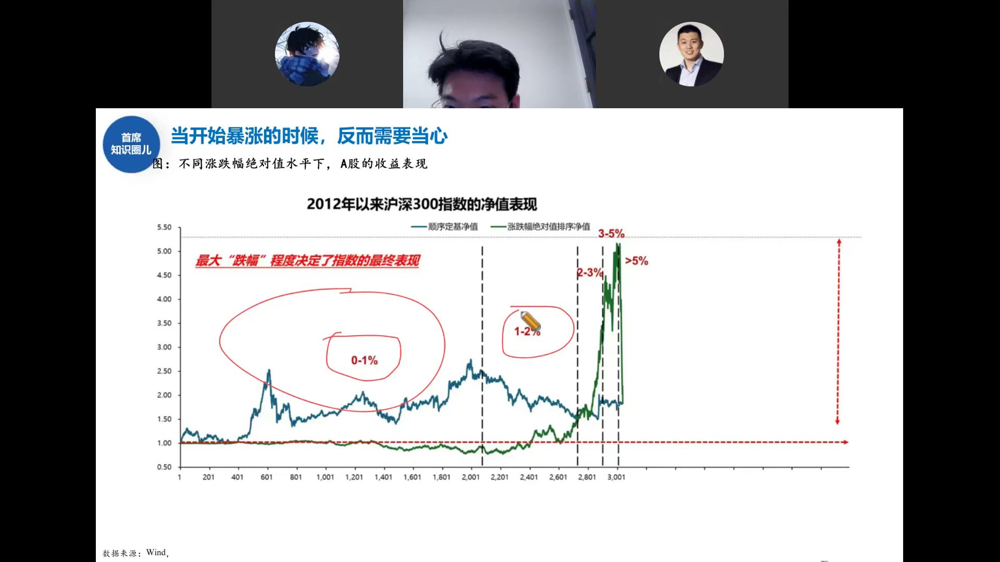
把沪深300所有交易日按涨跌幅绝对值排序后会发现：
- 0-1%波动区间贡献了绝大部分净值增长（绿色曲线在最左侧缓慢爬升）
- 1-2%、2-3%、3-5%、>5%的暴涨暴跌区间，净值反而在末端大幅回落
- 最大"跌幅"程度决定了指数的最终表现——尾部风险最重要
当市场开始暴涨的时候（单日3%以上频率增加），反而需要当心——因为暴涨之后往往跟着暴跌。真正赚钱的是那些窄幅波动的时间，不是大家期待的"大涨日"。
ERP：股债趋于平衡，拉长看债性价比更高
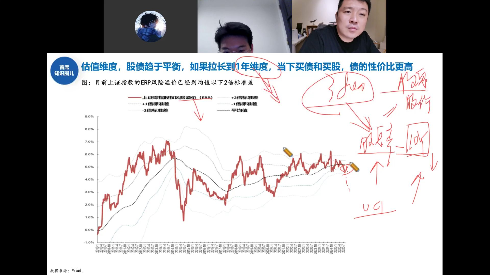
上证指数股权风险溢价（ERP）目前已到均值以下2倍标准差：
- ERP = 1/PE - 10年国债收益率，衡量股票相对债券的吸引力
- 当前ERP约5%，已低于历史均值（约4.5%-5%），接近-2倍标准差下沿
- 这意味着股票相对债券已经不便宜了
股债趋于平衡。如果拉长到1年维度，当下买债和买股，债的性价比更高。但短期看，牛市环境下股票仍有趋势性机会——这不是说要清仓股票，而是说股票的超额收益空间在收窄。